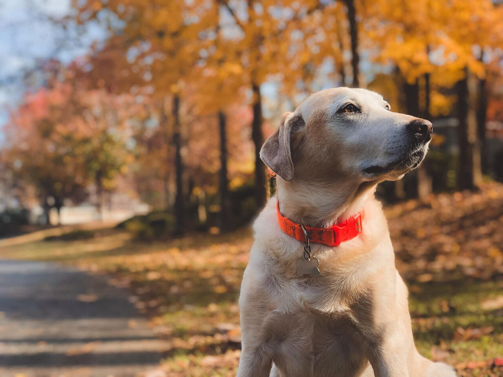

It's a Dog's Life
Dog Obedience Training is good for you and your dog. Your dog is your companion and a member of your family, it is worth taking the time to learn how to better communicate with them. With consistent practice and the proper techniques you can establish the foundation for an obedient dog, which makes for a happy home.
Paula Mckenzie has been working with dogs for over 50 years. She has done it all, from breeding to showing, grooming to training and everything in between. She has taught numerous people how to work with their dogs, starting with beginners level all the way to advanced.
What To Expect
We will meet once a week for one hour of class time. The class lasts for 8 weeks. You will need to practice with your dog for at least 30 minutes per day outside of class. The final class you and your dog will be tested to show standards. Once you have completed the class, you need to continue working with your dog every day, keep on practicing. You truly get out what you put into it.
What You Will Learn
We will start with some basic obedience commands and practice working with our dogs to reinforce these skills throughout the class.
- Heel
- Sit
- Stay
That will be our foundation, and we will build on that as we progress, yet always coming back to these basics. Short, frequent training sessions throughout the week are highly recommended.

What You Need for Class
There are some basic supplies you will need for this class.
- Pinch Collar
- A 3ft lead
- Comfortable clothing and shoes
- Treats
Don't worry, we will go over these items during the first class, Paula will show you how to get a properly fitted collar. We will be walking and moving the entire class, so you should dress comfortably and be prepared to move.